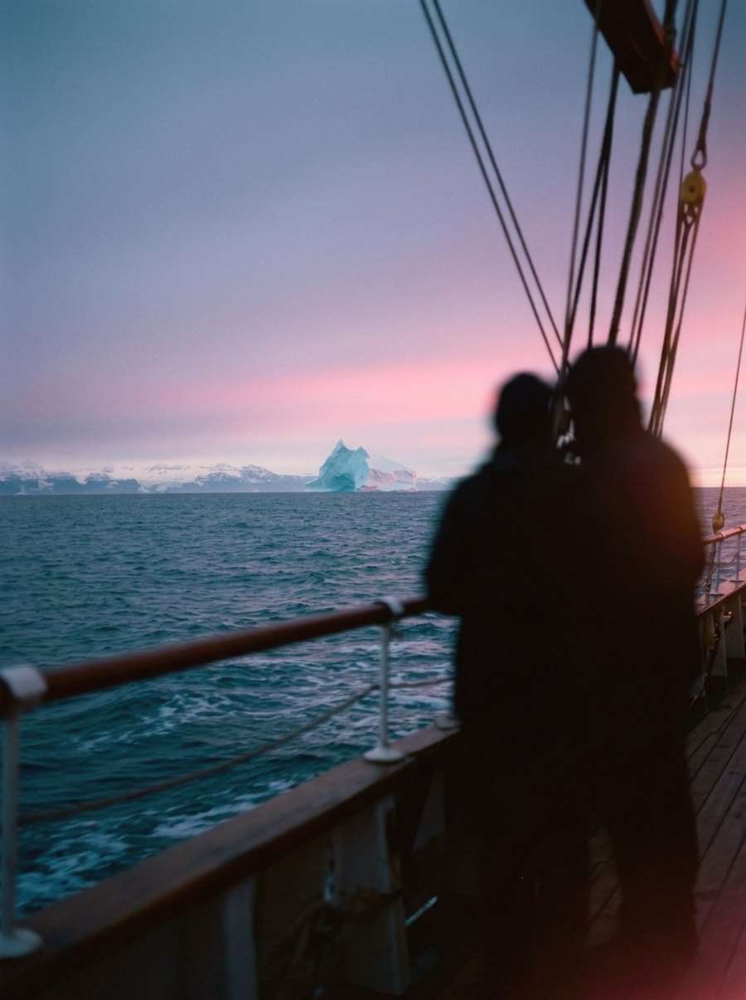

'26 11 19
'26 11 19
“答应自己要去的地方，无论多远，我都想拉着你去看看雪山与倒影。”
该从哪里落笔呢，你的十九岁。
总觉得日子不该走得这样快。冬意一深，我恍惚间还以为又到了高三快要“一诊”的时候——按理说，这会儿我本该正坐在家里的台灯下，对着淘宝屏幕，借口挑我喜欢的款式，偷偷给你选着文具。其实哪是什么顺手呢，不过是那时的想念太满，迫切地需要一点具体的安置。大概就是从那句说笑般的生日礼物起，某种微妙的秩序在我心里悄然重写——那是沦陷最初的预兆。
有人说，命运的职责在两个人初遇的那一刻便已经完尽了。可到了我们这里，它好像总有些放心不下，偏要在暗中多推一把——它不动声色地拨动了 xpy 的换座位软件，穿过教室里扬起的粉笔灰，给了我再一次靠近你、重新认识你的机会。
前些天我做了一个梦。梦见清晨的第一抹阳光斜斜地切进窗户，你就站在光里，在我眼前。醒来时心里空落落的，甚至有些孩子气地想：为什么人不能永远留在高中呢？如果可以重来一次，我宁愿再忍受一遍当时所有的枯燥与煎熬。可转念一想，记忆里那段如黄金般闪耀的日子，又哪是上天白白赐予的呢？分明是因为我遇见了那样一群鲜活滚烫的人，是因为我遇见了你。是你，才让原本苦涩漫长的跋涉，变成了落日后久久不肯散去的余晖。
那些散落在时光里的切片，至今仍在反复发光：
是你捧着我的相机，抬起头真诚夸赞我照片的那个瞬间——镜头原本是没有感情的，只是拍照的人用了心，我不是在按快门，是在借着取景框偷偷留住有你的时间；
是你递过一颗纸糖果、眉眼弯弯逗我发笑的瞬间——那种喜欢悬在舌尖，像咬开一颗青提，酸涩的皮破开后，清清凉凉的甜意便漫了上来；
也是你用长长的信笺，一笔一划回溯我们初识的那天；是分别多时后，耳机里猝不及防响起某首歌的那一刻……
这些零碎的瞬间在心里轻轻一碰，便拼出了你在我青春里的全部重量。原来，让人目光变得匆促的心动叫做喜欢；而心里那块被你装满、像半个米缸终于溢出了缸沿般的踏实，叫做爱。
只是，与轰轰烈烈的青春冲动相反，那时的我太擅长把汹涌的感情藏进沉默里。一个人没有那么喜欢谁的时候，总觉得自己足够理性、足够洒脱；可一旦真正把你放进心里，以前所有关于自己的判断就统统失效了。我像走在夜路上的盲人，小心翼翼地试探着你的方向，鼓起全部勇气把你约出来，却又在临门一脚时咽下了正式的告白。我既怕错过你，更怕彻底失去你；而你又藏得那样好，好到我不敢生出一分一毫的笃定。
直到那段时光轻轻合上，我写给你的信，依然安静地躺在手机备忘录里，像一页未曾投递的折角书签，平静而沉默。
今天是你十九岁的起点，我想把那封躺在备忘录里许久的信，原原本本地摊开在你面前：
嘴上写着“做好了准备”，可真到了看见你迟疑和纠结的那一刻，我还是慌了神，好像一下子承住了万千重量。
爱一个人，到底是怎样的感觉呢？
它应当是一个深思熟虑的判断吗？是冲动，还是勇气？
我想，它大概是我漫长而平凡的生活里，鲜有的浪涛与波澜起伏吧。
你会爱我吗？
Is it a crime to be unsure?
In time we'll find if we're suitable.
没关系的，给时间一点时间。爱情本就是一场属于勇敢者的游戏，真正读懂一个人或许需要穷尽一生的时间，而我们都在参与这场温柔的赌局——赌我们在看清彼此全部的脆弱与棱角之后，依然愿意坚定地爱下去。爱，从来都是勇敢者的奖励。
你看过《奥本海默》吗？我脑海里关于未来的样子，就像电影里的主角和他的妻子那样：无论往后岁月里有多少磨难与争吵，无论前一秒争执得多么面红耳赤、不可开交，只要下一秒我转过身，向你伸出手，你仍然愿意把手放进我掌心，握紧我，共同继续走下去。
被人深爱给予我力量，而深爱一个人赋予我勇气。
十九岁生日快乐，嘉怡。世界终于要见到我早就见到过的、那个熠熠生辉的你了；如果把《喜欢你》做成一本书，你是一部诗的终点，而这句“我爱你”，只是序言。
冬天一诊快到的时候，坐在家里对着淘宝屏幕给你挑我喜欢的文具。现在回过头看才发现，其实哪是什么顺手挑几支笔呢——不过是那时候的想念太满，迫切地需要一点具体的安置。
“你可以大方地收下，别有压力——是我的想念，需要一点具体的安置。”
'26 11 19
“答应自己要去的地方，无论多远，我都想拉着你去看看雪山与倒影。”

'26 11 19“天在将黑未黑时最美，你在我身边吹风的样子，比粉紫色的晚霞更动人。”
 '26 11 19
'26 11 19
“我们要散步，把八分钟的路绕成四十分钟，走到整片落日海岸线的尽头。”
 '26 11 19
'26 11 19
“车窗是移动的取景器。只要你靠在肩头，经过的山湖都是只放给我们看的电影。”
 '26 11 19
'26 11 19
“镜头失焦的时候光斑会变成温柔的圆，就像那天站在窗前看烟火时你的眼睛。”
 '26 11 19
'26 11 19
“在傍晚、晚风、余晖和路灯下，在你飘动的发丝间——和你一起浪费时间，是最美妙的事。”
总想起你用纸糖果逗我笑的那一天。
那种喜欢悬在舌尖，像咬开一颗青提——酸涩的皮破开后，清清凉凉的甜意便慢慢漫上来。